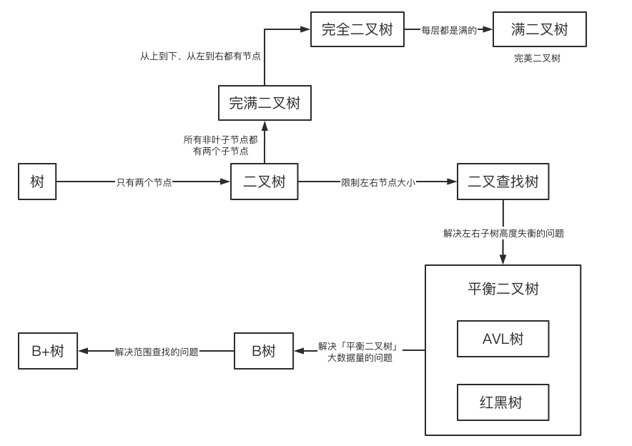
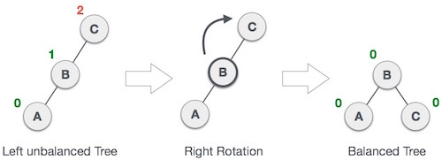
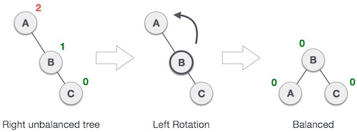
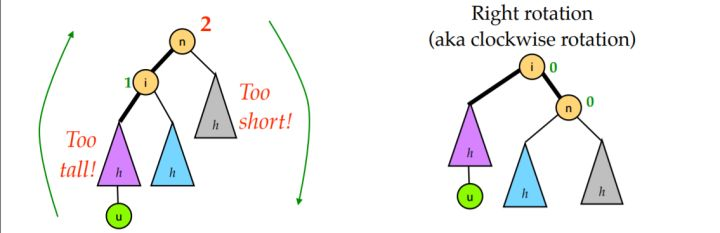
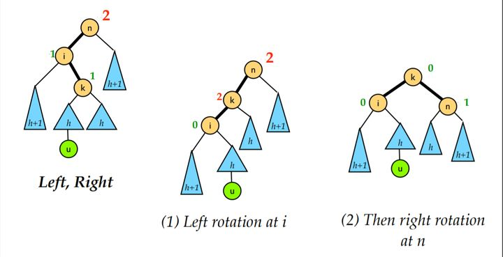
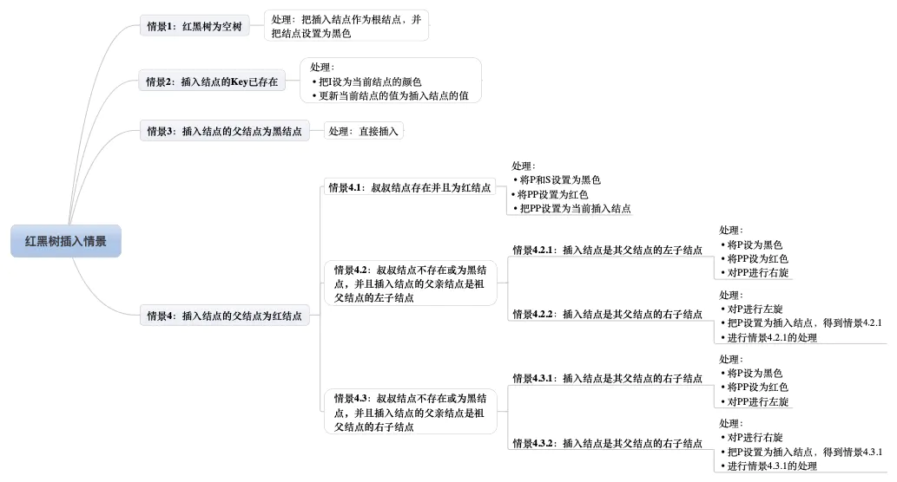
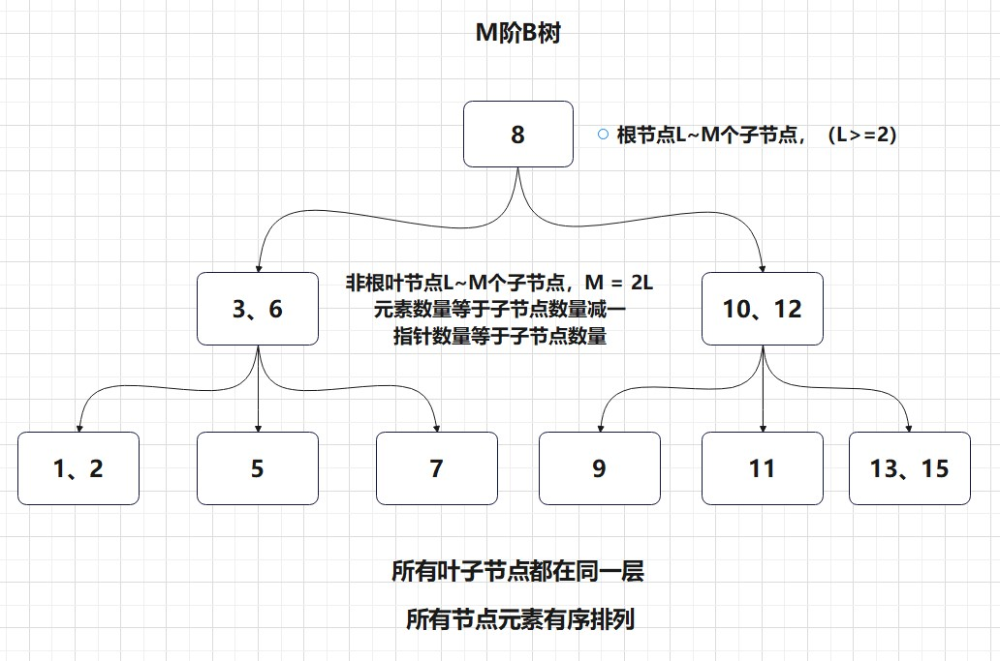
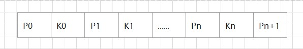

树形结构
前言
由n(n≥1)个有限节点组成一个具有层次关系的集合，特殊的图
- 自由树就是连通无回路图
- 森林就是不一定连通的无回路图，它的每一个连通分量是一棵树
- 任选自由树的一个节点为根就是有根树
有根树
1 | 1. 根节点（树根）：没有父节点的节点 |
有序树
树中兄弟节点按一定次序排列

二叉树
每一个节点的子女不超过两个，且每个子女不是左子女就是右子女，递归定义
构建方式
- 链式结构，每一个节点包含前驱和后继
- 邻接表等表示图的方法
- 满二叉树：每一层的节点数都达到最大值
- 完全二叉树：仅最后一层的节点数未达到最大值，且最后一层的节点从左到右连续无间隔
- 二叉查找树：父节点大于左子节点，父节点小于右子节点
- 平衡二叉树：二叉查找树中，左子树和右子树深度差不超过1
- 最优二叉树（哈夫曼树）：带权路径长度最短
AVL树
起源：G.M.Adelson-Velsky和E.M.Landis，在1962年的论文《An algorithm for the organization of information》中发表了它。
构建：
- 自平衡的二叉查找树，左右子树的高度差不超过 1
- 右旋：B是C的左子树，B抛弃右孩子，将之和旋转后的节点 C 相连，成为节点 C 的左孩子
- 左旋：B是C的右子树，B抛弃左孩子，将之和旋转后的节点 C 相连，成为节点 C 的右孩子


平衡：
- LL型：对高度差大于1的节点右旋一次。
- RR型：对高度差大于1的节点左旋一次。
- LR型：对高度差大于1的节点的左孩子左旋一次，再对该节点右旋
- RL型：对高度差大于1的节点的右孩子右旋一次，再对该节点左旋



红黑树
起源：1972年的论文 “A Dichromatic Framework for Balanced Trees” 中，Leonidas J. Guibas 和 Robert Sedgewick从对称二元B树（symmetric binary B-tree）中推导出了红黑树。
构建：
- 自平衡的二叉查找树。
- 节点是红色或黑色。
- 根是黑色。
- 所有叶子都是黑色（叶子是NIL节点）。
- 每个红色节点必须有两个黑色的子节点。（从每个叶子到根的所有路径上不能有两个连续的红色节点。）
- 从任一节点到其每个叶子的所有简单路径都包含相同数目的黑色节点。
平衡：
- 左旋
- 右旋
- 变色

堆
通常可以看作完全二叉树
1 | //模拟大根堆 |
STL 堆
1 | 容器为vector / deque |
B树


概述：鲁道夫·拜尔（Rudolf Bayer）和 艾华·M·麦克雷（Ed M. McCreight）于1972年在波音研究实验室（Boeing Research Labs）工作时发明了B 树
原理：一般化的二叉查找树，多路平衡搜索树
特征：
- 定义任意非叶子结点最多只有M个儿子；且M>2；
- 根结点的儿子数为[2, M]；
- 除根结点以外的非叶子结点的儿子数为[M/2, M]；
- 每个结点存放至少M/2-1（取上整）和至多M-1个关键字；（至少2个关键字）
- 非叶子结点的关键字个数=指向儿子的指针个数-1；
- 非叶子结点的关键字：K[1], K[2], …, K[M-1]；且K[i] < K[i+1]；
- 非叶子结点的指针：P[1], P[2], …, P[M]；其中P[1]指向关键字小于K[1]的子树，P[M]指向关键字大于K[M-1]的子树，其它P[i]指向关键字属于(K[i-1], K[i])的子树；
- 所有叶子结点位于同一层；
构建：元素的插入只会添加在叶节点，若此叶节点未满直接插入，否则进行分裂：取中点插入到父节点，其他元素为左右子树
n个关键字，阶数m，高度h的B树
满m叉树<= h <= 最坏情况
- n <= (m - 1)(1 + m + m2 + … + mh - 1) = mh - 1
- 根节点最少一个关键字，第二层2个，第三层2 * （m / 2）（取上界个元素），第i层2 * （m / 2）i（取上界个元素），转换为等比数列求和就是 2 * （m / 2）h - 1（取上界个元素） - 1 <= n。 logm/2(n + 1)/2 + 1
B+树
概述：
- B树的变体
- B树节点包括索引、数据指针、子树指针，B+树只有叶节点才有数据指针
- B+树的叶节点为链表形式，额外有指向下一个叶节点的指针
特征：
- B+树的磁盘读写代价更低：B+树的内部节点并没有指向关键字具体信息的指针，因此其内部节点相对B树更小
- B+树的查询效率更加稳定：任何关键字的查找必须走一条从根结点到叶子结点的路，所有关键字查询的路径长度相同
- 对于范围查找来说，b+树只需遍历叶子节点链表即可，b树却需要重复地中序遍历。即可随机查找，又可顺序查找
构建：按Wikipedia的来，非叶节点的子树指针数 = 索引数 + 1，每一个子树指针P[0]指向 小于等于K[0]，P[i]指向 K[i] ~ K[i+1]的左开右闭区间，类似B树构建，但是分裂的时候将分裂出来的子树添加对应的父节点中的索引即可。
B* 树
概述：B+树的变体，非叶子结点元素个数至少为(2/3)M，提高空间利用率
特征：每个节点都有指向兄弟的指针，B* 树节点满时会检查兄弟节点是否满，如果兄弟节点未满则向兄弟节点转移关键字，如果兄弟节点已满，则从当前节点和兄弟节点各拿出1/3的数据创建一个新的节点出来